BIOLOGY VRКровь, сосуды, гемостаз и иммунный ответ — как единая интерактивная миссия внутри артерии
Единая точка документации проекта: концепция игры, полный маршрут из 18 сцен, библиотека биологических и технических пресетов, связи «сцена → используемые пресеты» и обратные связи «пресет → сцены».
Концепция
Игрок не «гуляет по организму», а проходит спроектированную научную миссию: наблюдает → исследует → получает термин → применяет знание → видит физиологический результат.
Основной маршрут
Лаборатория → переход в микромир → единая извилистая артерия → сосудистые и иммунные события → восстановление гомеостаза → лаборатория → отчёт.
Грамматика взаимодействия
Руки, захват, сканирование, увеличение учебных моделей, BioTool с открывающимися режимами, постоянный информационный экран и HUD.
Научный принцип
Визуальная стилизация допускается, но механика должна объяснять причинно-следственные связи. Условные масштабы и упрощённые модели явно маркируются.
Сцены
Каждая сцена имеет отдельную страницу с иллюстрацией, технической последовательностью, механикой и прямыми ссылками на все задействованные пресеты.
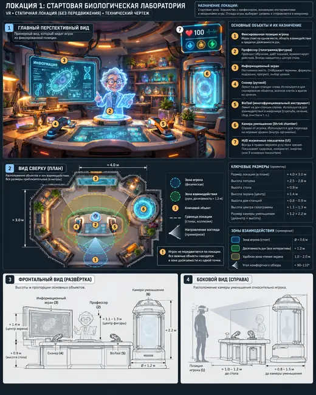
Лаборатория
Научить игрока базовым VR-взаимодействиям и задать миссию.
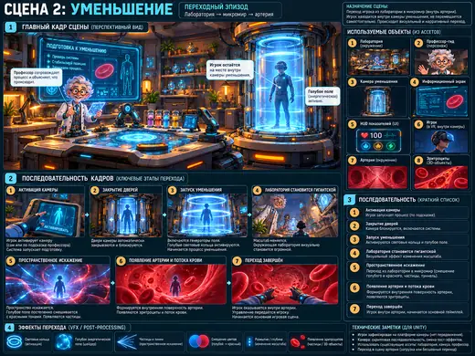
Уменьшение
Без затемнения перевести игрока из лаборатории в микромир.
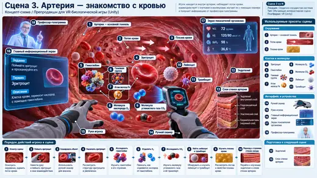
Артерия — знакомство с кровью
Познакомить с основными форменными элементами крови и молекулярным уровнем.
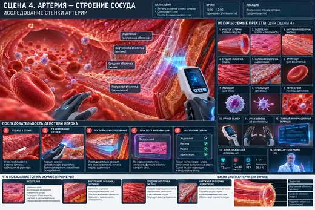
Строение артерии
Показать строение внутренней стенки артерии и её слои.
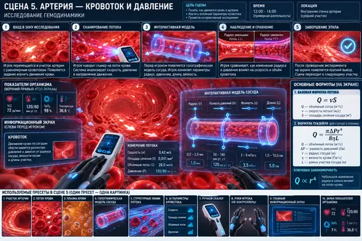
Кровоток и давление
Связать наблюдаемый кровоток с радиусом сосуда, скоростью и давлением.
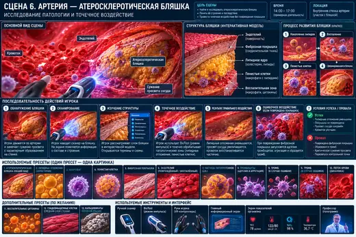
Атеросклеротическая бляшка
Ввести патологию стенки сосуда и первую точную активную механику BioTool.
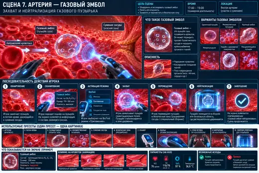
Газовый эмбол
Отработать дистанционный захват и перемещение опасного объекта.
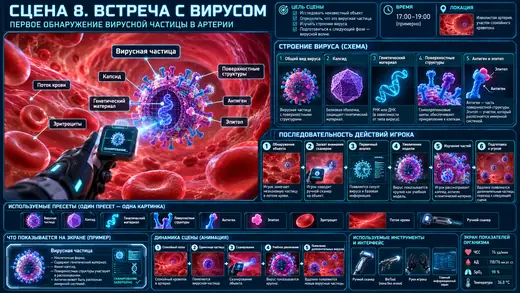
Первая встреча с вирусом
Научить сначала исследовать угрозу, а не атаковать её.
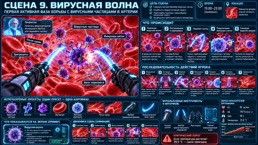
Вирусная волна
Сделать иммунный ответ динамическим испытанием с ростом температуры.
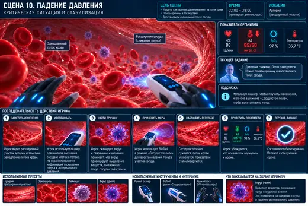
Падение давления
Показать падение давления и временное управление тонусом сосуда.
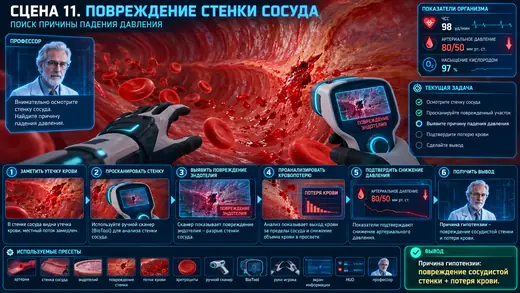
Повреждение стенки сосуда
Найти физическую причину падения давления — разрыв внутренней стенки.
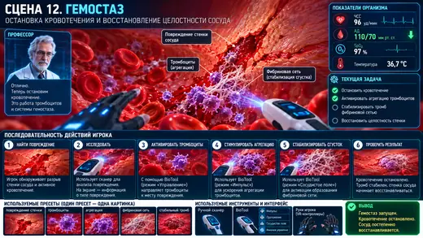
Гемостаз
Пошагово собрать первичный и стабилизированный гемостатический ответ.
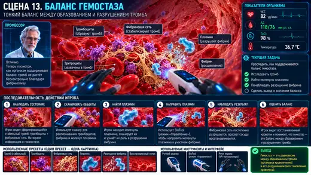
Баланс гемостаза
Научить, что гемостаз должен быть достаточным, но не перекрывать сосуд.
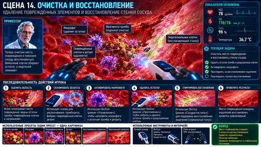
Очистка и восстановление
Показать очистку повреждённой зоны и восстановление эндотелия.
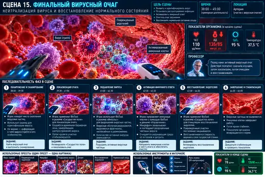
Финальный вирусный очаг
Объединить вирусологию и иммунологию в многофазный финальный эпизод.
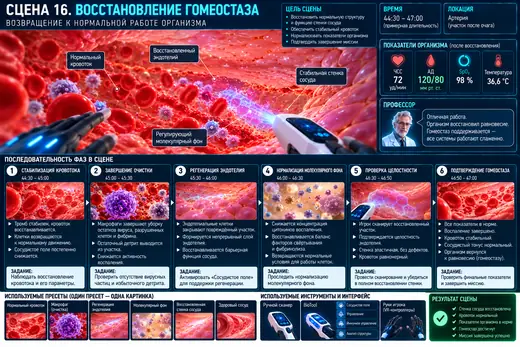
Восстановление гомеостаза
Сравнить текущее состояние с исходным и подтвердить восстановление гомеостаза.
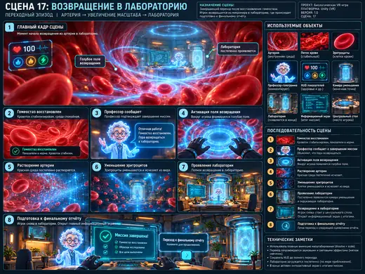
Возвращение в лабораторию
Вернуть игрока из микромира в исходную лабораторию.
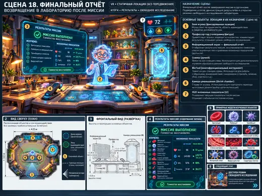
Финальный отчёт
Свести результаты миссии и открыть режим свободного исследования.
Маршрут игрока
Библиотека пресетов
Все 3D/UX/VFX-объекты разложены как отдельные сущности. На странице каждого пресета указано, где он используется.
Стартовая лаборатория
Статичная рабочая зона; изображение сцены 1 используется как референс.
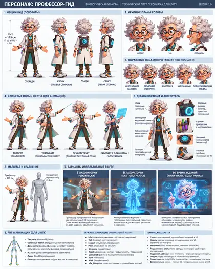
Профессор-гид
Физический/голографический научный проводник.
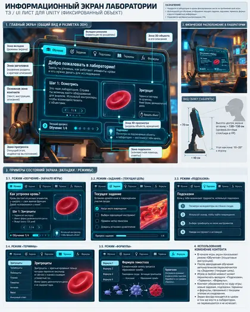
Информационный экран
Постоянный экран заданий, терминов, формул и подсказок.
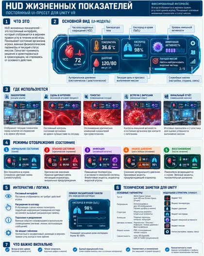
HUD жизненных показателей
Постоянные ЧСС, АД, SpO₂, температура и статус миссии.
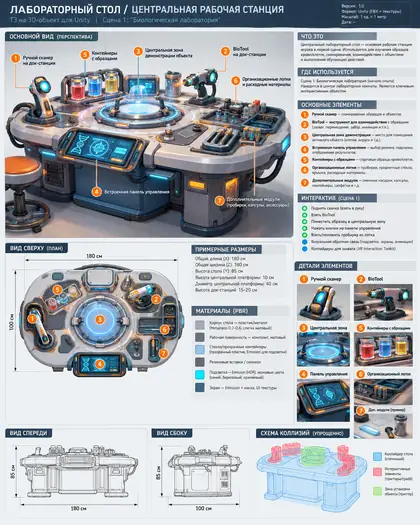
Лабораторный стол
Центральная рабочая станция и доки инструментов.
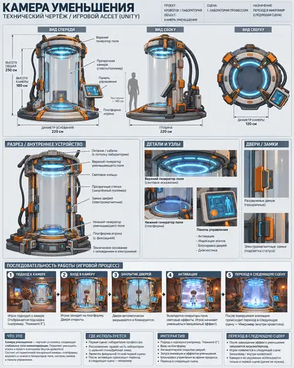
Камера уменьшения
Переход лаборатория ↔ микромир.
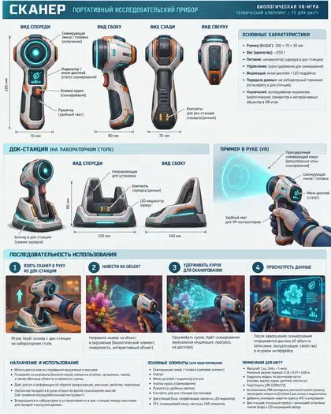
Ручной сканер
Распознавание и исследование объектов.
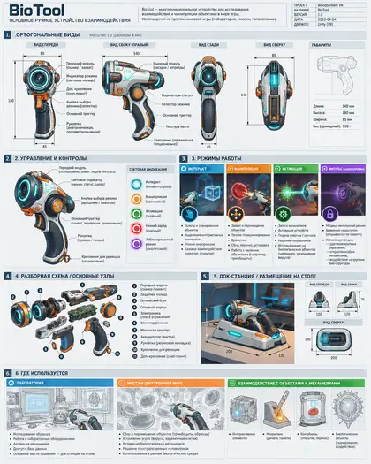
BioTool
Импульс, притяжение, управление, сосудистое поле, иммунное управление.
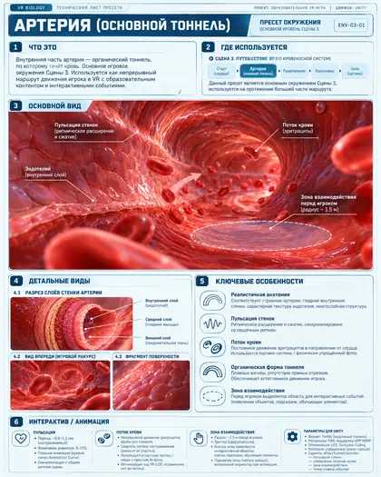
Артерия — основной тоннель
Основная игровая локация внутри просвета сосуда.
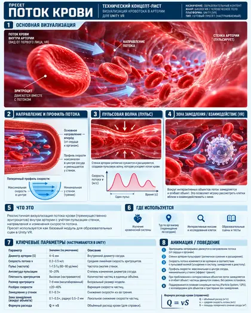
Поток крови
Перенос клеток, пульсация, скорость и состояния потока.
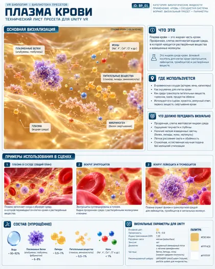
Плазма крови
Жидкая среда кровотока.
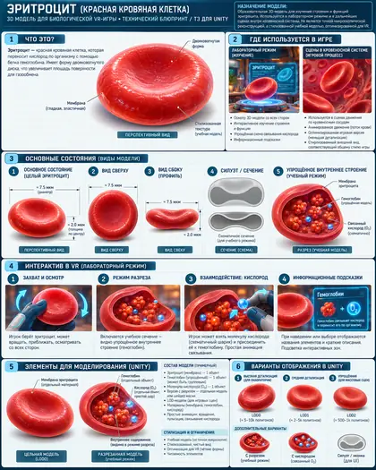
Эритроцит
Интерактивный форменный элемент крови.
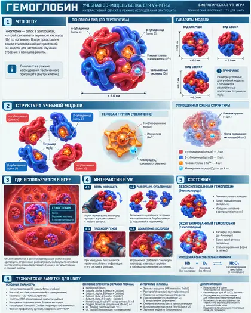
Гемоглобин
Учебный вложенный объект эритроцита.
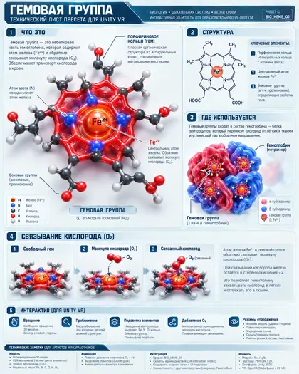
Гемовая группа
Связывание O₂ через Fe²⁺.
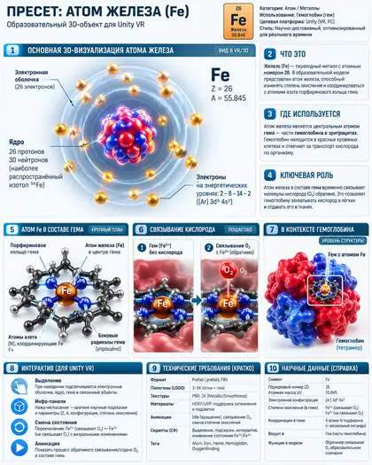
Атом железа Fe
Центральный атом гема.
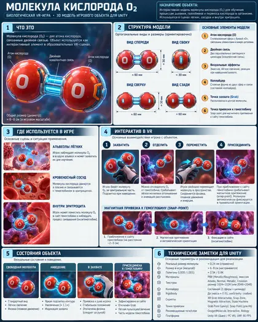
Молекула кислорода O₂
Снимается и возвращается к учебной модели.
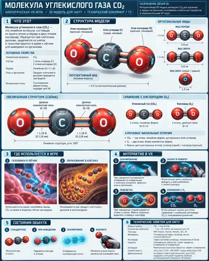
Молекула углекислого газа CO₂
Сравнение транспорта дыхательных газов.
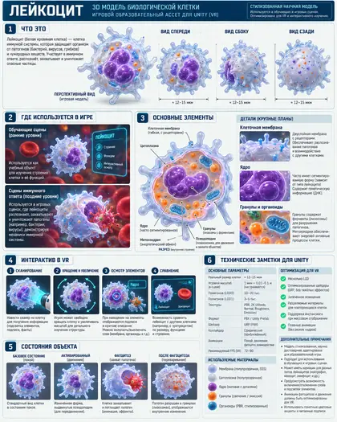
Лейкоцит
Базовая иммунная клетка.
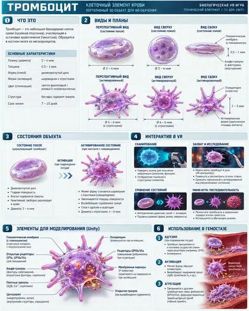
Тромбоцит
Покой, активация, адгезия, агрегация.
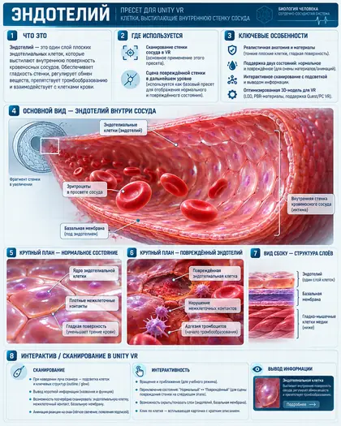
Эндотелий
Внутренний клеточный слой артерии.
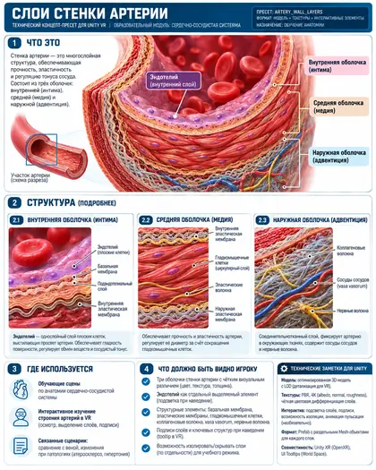
Слои стенки артерии
Послойная учебная визуализация стенки.
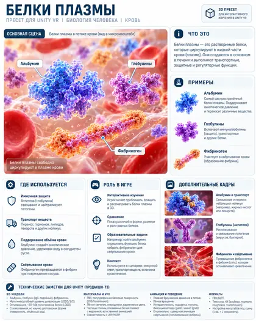
Белки плазмы
Альбумин, глобулины, фибриноген и др.
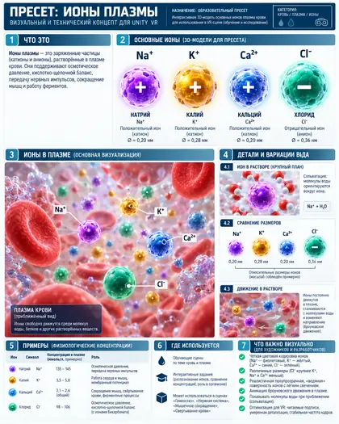
Ионы плазмы
Na⁺, K⁺, Ca²⁺, Cl⁻.
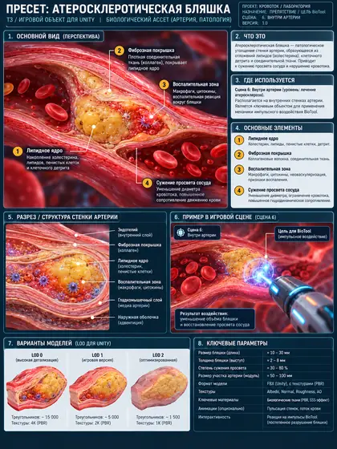
Атеросклеротическая бляшка
Композитный объект сцены 6.
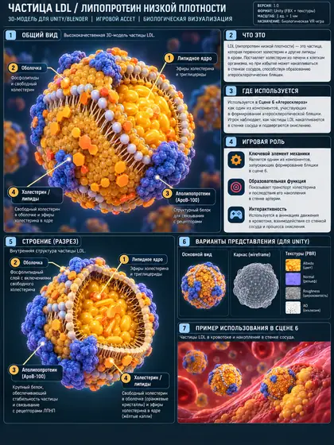
Частица LDL
Учебная визуализация липопротеинов.
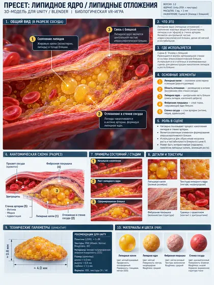
Липидное ядро
Внутренняя часть бляшки.
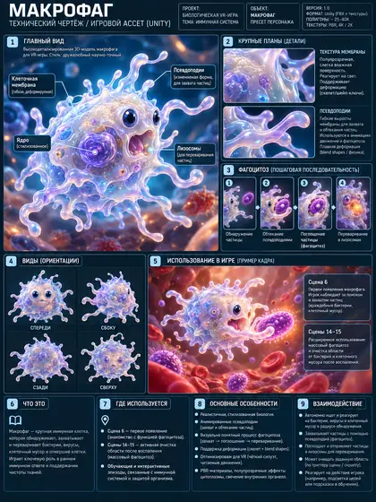
Макрофаг
Фагоцитоз, бляшка, очистка и финальный иммунный ответ.
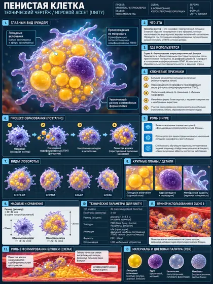
Пенистая клетка
Макрофаг с накопленными липидами.
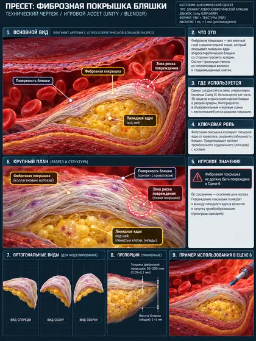
Фиброзная покрышка
Защищаемая поверхность бляшки.
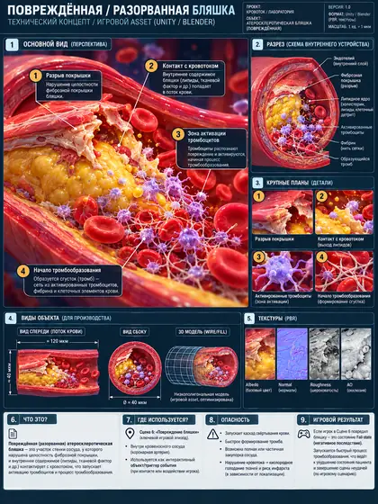
Разорванная бляшка
Fail-state сцены 6.
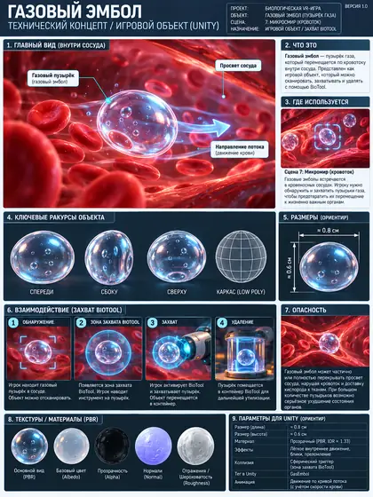
Газовый эмбол
Главный объект сцены 7.
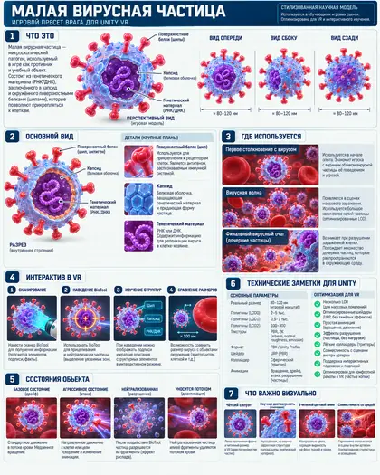
Малая вирусная частица
Основная вирусная цель сцен 8, 9 и 15.
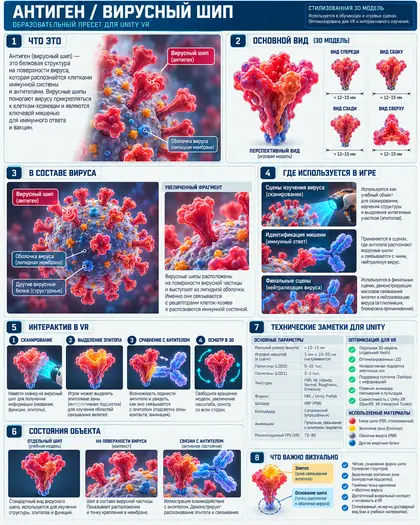
Антиген / вирусный шип
Выделяемый эпитоп и связывание антитела.
Повреждённая внутренняя стенка
Локальный модуль повреждённой внутренней поверхности.
Локальный разрыв эндотелия
Край разрыва и обнажённый субэндотелиальный матрикс.
Тромбоцитарная пробка
Первичный агрегат активированных тромбоцитов.
Фибриноген
Растворимый предшественник фибрина.
Тромбин
Преобразование фибриногена в фибрин.
Фибрин
Отдельные нити и полимеризация.
Фибриновая сеть
Трёхмерный каркас стабилизированного тромба.
Стабильный тромб
Итог сцены 12–13.
Клеточный детрит
Объект фагоцитоза и очистки.
Нейтрофил
Ранний иммунный ответ / дополнительный фагоцит.
Восстанавливающийся эндотелий
Миграция и закрытие дефекта.
Восстановленная внутренняя стенка
Финальное состояние после восстановления.
Инфицированная клетка
Источник новых вирусных частиц в боссе.
Антитело
Специфическое связывание антигена.
Нейтрализованный вирусный комплекс
Вирус, связанный антителами.
Цитотоксический T-лимфоцит
Распознаёт и устраняет инфицированную клетку.
Финальный вирусный очаг
Инфицированная клетка + генераторы вирусных частиц.
B-лимфоцит / плазматическая клетка
Образовательная вставка о происхождении антител.
Исходные документы
В репозитории сохранены исходные Markdown-документы, из которых собран этот сайт.